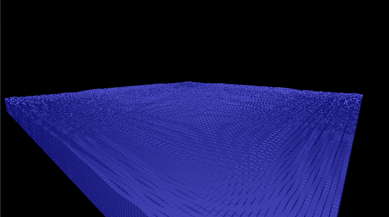
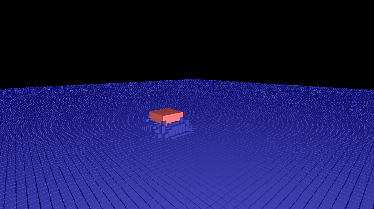
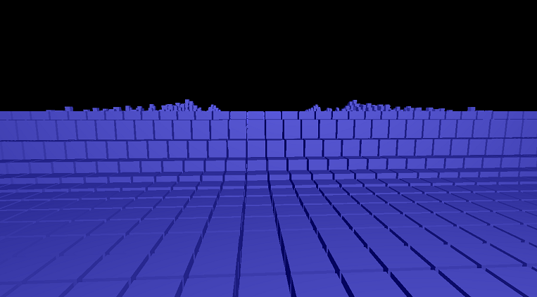

CSCI 444/544 - Advanced Computer GraphicsSpring 2017 |
|
| | Home | Syllabus | Assignments | Schedule | Resources | | |
Final Project: Height FieldsJacob DavisArnaud Filliat Joseph Wilson ------------------------------------------------------------------------------------------- In this project we implement a height field fluid simulation that runs in realtime The height Field information is stored in two, two dimensional arrays. One for column height and one for column velocity. These columns are updated each frame. Each column calculates the force on it due to the four surrounding columns with the equation, f = c2*(u[i+1,j]+u[i-1,j]+u[i,j+1]+u[i,j-1]{ 4u[i,j])/h2. C represents the speed of a wave and h represents the width of a column. This equation is derived from a reduction of realistic wave equations to two di- mensions. Our simulation takes place on a large scale with each column representing a 1 meter by 1 meter column of water. After the force is calcu- lated it is applied to the velocity of each column. The force is multiplied by the amount of time that has passed since the last update, 1/60th of a second in our case. This ensures that steps remain constant even if framerate is changed. After all velocities have been updated the height of each column is modified by adding velocity multiplied by the time step. This process of forward Euler integration can lead to feedback loops if not controlled so we implement damping and clamping. Velocity is damped by a factor of 0.99 each step and column height is bounded between -100 and 100 although with the damping factor these extremes are rarely reached. Waves propagating through the field ------------------------------------------------------------------------------------------- An important part of the simulation is using various boundary conditions to mimic realistic wave reflection off of rigid surfaces or mimic large bodies of water. Our implementation has the option to perform four different boundary conditions using a variety of techniques. The first technique to be implemented is called boundary clamping. When using clamping, the columns on the edges of the height field use themselves in place of any missing columns. This creates an effect similar to water reflecting off of a rigid vertical surface with a minimal velocity on columns around the edges of the height field. The next technique is called wrapping boundaries. Boundaries that wrap use the columns on the opposite side of the height field to calculate their velocities. This is useful for creating an effect similar to how water reacts in a large body by copying one height field in a checkerboard pattern to easily create a large body without having to process an excess of columns which could effect framerate. Finally, the last two techniques use a ghost boundary for reflecting. These techniques are similar to clamping and perform similarly, but instead of a column using itself as a reference when there is no column on one or more sides of it, a ghost column is used. In one implementation, the average height of the columns in the height field is used creating an extremely rigid outer wall of columns around the height field. The other implementation uses the slope between the outermost and second most outer columns to determine the height of the ghost. This method can be very realistic, but it has one inherent flaw. If the heights of the corners of the height field are not equal to the average height of all the columns, there will be a slant leading to the corners in question. This is because the heights of the corners never changes in this implementation due to how they are calculated. There are some simple hacks to avoid this such as setting the corners to be equal to the average at the start or using clamping only for the corners, but we left this flaw in our program to display it.  Waves reflecting from walls ------------------------------------------------------------------------------------------- Object interaction is implemented with a cube. Our cube is therefore 3 drawn with edges parallel to the edges of our columns. During each step of the simulation we find the location of the corners of the cube with respect to the indices of our columns. This allows us to compare the cubes height with that of the water. By subtracting the height of the base of the cube from the height of the water and clamping between 0 and cube width we calculate the amount of water displaced by the cube. The displacement of each column is stored in another 2-dimensional array and by comparing the new displacement with the old we are able to calculate the change in displacement of water by the cube. Once the total displacement and the change in displacement are known these values are used to calculate the force on the cube and the change in water level around the cube respectively. Any change in displaced water is added or subtracted directly to the columns surrounding the cube. Our height field inside the cube is not modified allowing water to cover the cube should it fall below the water level. Because the height field is not modified on the inside of the cube a feedback loop can occur. The displaced water is added to the surrounding columns which ow inward increasing the amount of displaced water by the cube, adding more water to the surrounding columns. This was solved in two ways. The first option sets the height of each internal column to halfway up the cube. This allows the following update due to column velocity to pull a column above the cube and prevents the feedback loop but gives the water a much more viscous appearance with it clinging to the cube, creating depressions and mounds in the surface when the cube is dropped and raised respectively. The second option is to use the average water level instead of the local column height. This leads to realistic simulations when the water is relatively at but leads to disconnected water ripples and cube movement if the surface is far above or below average at that location. Once the water is updated the cube is moved using Forward Euler integration and standard physics equations. Force due to water is calculated with density*gravity*displacement and both it and gravity are applied to velocity and then velocity to cube location.  Displacement of water by cube ------------------------------------------------------------------------------------------- Ripples propagating from cube impact ------------------------------------------------------------------------------------------- It is also important to ensure water is not added or removed from the simulation. To do this we initially calculate an average volume for a column. Upon each step we recalculate this average and add or subtract the difierence from every column. This prevents small errors in calculation from drastically altering the volume of our fluid over time. The final step is drawing the height field. To do this we created an additional array that contains a point representing the top left corner of each column. The x and z components were the indices of a location and 4 the y the height. This array was transferred to the GPU via and VBO and VAO to as points. A geometry shader then took each point and expanded it into a column, adding sides with specifed widths and a height determined by the height of each point. The columns were then shaded with Blinn-Phong shading. A simple set of Blinn-Phong shaders were applied to the cube as well, completing our lighting.  Wave front ------------------------------------------------------------------------------------------- Online Resources: http://matthias-mueller-fischer.ch/talks/GDC2008.pdf http://zejiazheng.com/?p=87 | |